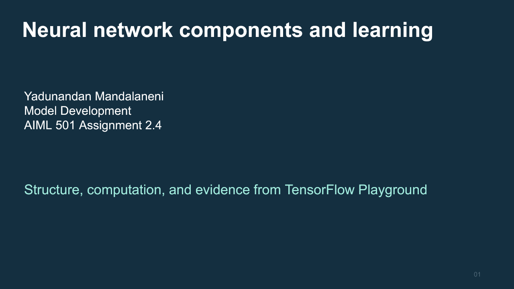
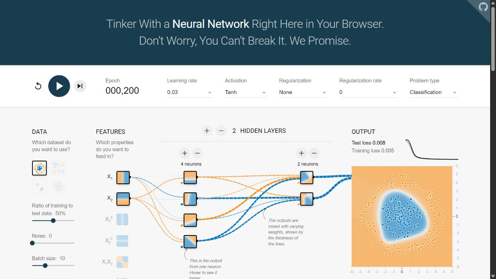
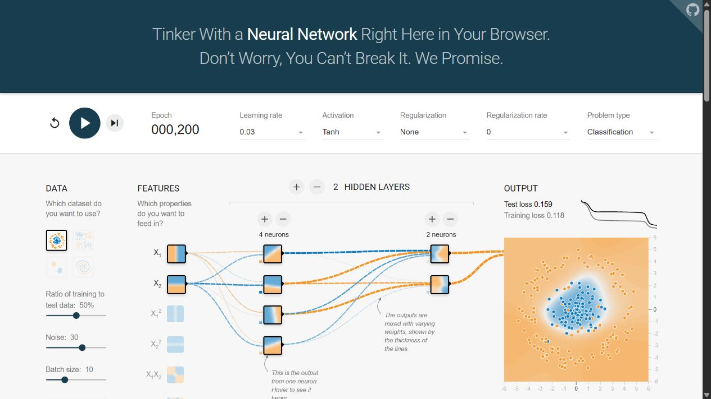
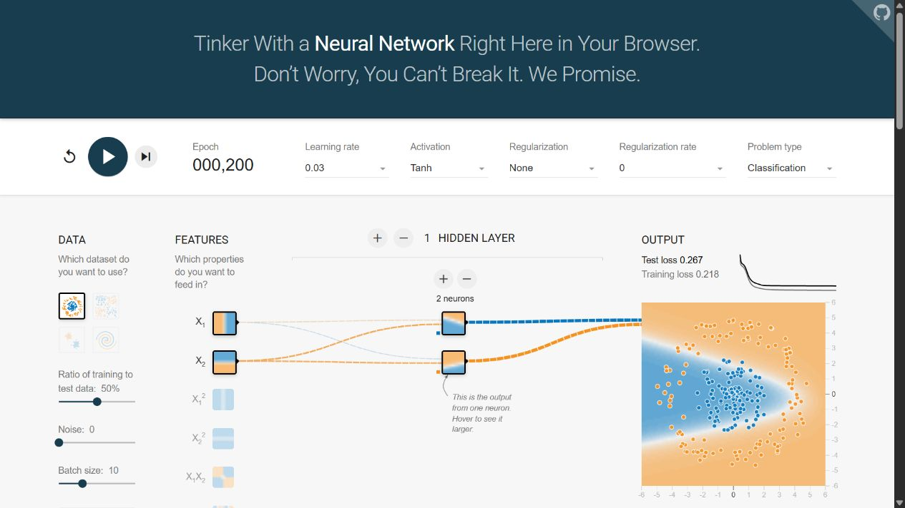
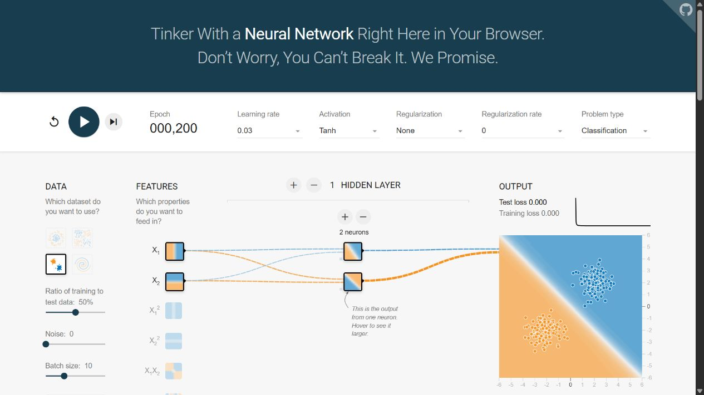

Artifact 02 / AIML-501 / Assignment 2.4
Neural network components and learning
A visual explanation of how networks compute and learn, supported by six actual TensorFlow Playground experiments.
This second artifact examines the mechanisms inside a neural network. It complements the Algorithm Types framework, which compares model families across tasks.
Download editable PowerPointOpen PDF viewing copyExplore experiment evidence
Visual presentation

Read the complete presentation text. Downloads remain available independently of the slide viewer.
Six components in one learning process
- Layers
- Groups of neurons at a computation stage. Input features pass through hidden transformations to the output.
- Neurons
- Units that apply an activation to a weighted sum plus a bias.
- Weights
- Trainable connection strengths that scale and combine signals. Biases shift neuron responses.
- Activation functions
- Mappings from summed input to output. Nonlinear hidden activations allow more expressive compositions.
- Loss functions
- Objectives that measure disagreement between predictions and targets.
- Optimization algorithms
- Rules that update parameters using gradients. Backpropagation computes the gradients.
Playground experiments
All six classification runs use 200 epochs, learning rate 0.03, batch size 10, a 50% training split, and no regularization. These are single exploratory runs captured on November 12, 2026. The activation column describes hidden units. Playground keeps tanh at the classification output and averages half squared error. Run D has no hidden layer, so the hidden activation setting has no effect.
| Run | Dataset | Noise | Inputs | Hidden widths | Hidden activation | Training loss | Test loss | Parameters | Seed | Configuration |
|---|---|---|---|---|---|---|---|---|---|---|
| A | Circle | 0 | x1 and x2 | 4, 2 | linear | 0.485 | 0.541 | 25 | 0.50685 | Open run A settings |
| B | Circle | 0 | x1 and x2 | 4, 2 | tanh | 0.005 | 0.008 | 25 | 0.50685 | Open run B settings |
| C | Circle | 30 | x1 and x2 | 4, 2 | tanh | 0.118 | 0.159 | 25 | 0.86965 | Open run C settings |
| D | Circle | 0 | x1 squared and x2 squared | None | Not applicable | 0.003 | 0.002 | 3 | 0.54364 | Open run D settings |
| E | Circle | 0 | x1 and x2 | 2 | tanh | 0.218 | 0.267 | 9 | 0.54364 | Open run E settings |
| F | Gaussian | 0 | x1 and x2 | 2 | tanh | 0.000 | 0.000 | 9 | 0.23512 | Open run F settings |
Parameter counts include dense weights and biases. Losses are rounded to three decimals; 0.000 does not mean exactly zero. Configuration links reopen settings and seeds, rather than saved trained weights. Download experiment records.
What the observations show
With raw inputs on the clean circle task, tanh hidden units produced a better fit than linear hidden units in the observed runs. Squared features allowed a network with only three trainable parameters to represent the enclosed boundary. The small network struggled with the circle but fitted the Gaussian data well. The noisy circle produced overlapping observations and higher loss than the clean example.
These comparisons do not isolate every factor. Data controls can regenerate samples and change seeds, and the study did not independently pair random initial weights. The fixed epoch budget supports a learning-budget comparison. Browser interaction and rendering overhead prevent interpreting elapsed interaction time as a compute-speed benchmark. Repeated seeds, deliberately controlled initialization, and separate final evaluation data would strengthen further work.
Original screenshots
Run A — Circle, noise 0, hidden widths 4, 2
Run B — Circle, noise 0, hidden widths 4, 2

Run C — Circle, noise 30, hidden widths 4, 2

Run D — Circle, noise 0, hidden widths none
Run E — Circle, noise 0, hidden widths 2

Run F — Gaussian, noise 0, hidden widths 2

Artifact information
Introduction and description
A 15-slide visual presentation explains neural network structure and training with an editable architecture diagram, a numerical neuron example, activation curves, and six documented experiments.
Objective
Explain layers, neurons, weights, activation functions, loss functions, and optimization algorithms, then connect those concepts to observable model behavior.
Process
The assignment brief defined the six components. Official learning materials and Playground source code clarified the mathematics and tool behavior. Six UI experiments varied data geometry, noise, selected features, hidden widths, and activation. Each used 200 epochs. Captured settings, rounded losses, and screenshots informed the presentation. Visual review corrected diagram spacing, arrow direction, and table coverage.
Tools and technologies
TensorFlow Playground supplied the experiments. ChatGPT/Codex assisted with research, browser operation, content, presentation authoring, and HTML/CSS/JavaScript implementation. GitHub records the source, and GitHub Pages hosts this portfolio. The PowerPoint keeps diagrams, tables, and the activation chart editable. The PDF provides a visual reading copy; equivalent explanatory text appears below.
Value proposition
The artifact helps a learner or colleague connect network components to the resulting decision boundary and loss, making technical discussions about model behavior more concrete.
Unique value
The explanation checks actual Playground implementation details and ties them to experiment evidence. The squared-feature example shows why representation can reduce the required learned capacity.
Relevance
This work develops visual technical communication, experiment documentation, and understanding of neural network fitting. It extends the portfolio from comparing algorithms to explaining their internal mechanisms.
Complete presentation text
Open the accessible slide explanations
1. Neural network components and learning
AIML 501 Assignment 2.4. A visual explanation of six neural network components, supported by six actual TensorFlow Playground runs. Yadunandan Mandalaneni. Model Development. November 12, 2026.
2. Architecture and data flow
Layers group neurons. Inputs hold supplied features. Hidden layers transform intermediate representations. The output layer produces the prediction. This schematic matches the 2 input, 4 neuron, 2 neuron, 1 output architecture in runs A to C. Lines show trainable connections. Biases also belong to every non-input neuron. The diagram is schematic and does not reproduce learned weights.
3. Neurons weights and bias
A neuron computes a weighted sum plus a bias and then applies an activation. Weights scale contributions and can change their sign. Bias shifts the response even when inputs are zero. This numeric example is illustrative rather than a value measured from a trained model. z = 0.6 times 0.8 minus 0.5 times 0.2 plus 0.1 = 0.48. tanh(0.48) is approximately 0.446.
4. Layers and model capacity
A layer is a group of units at the same stage of computation. Hidden width and depth affect the functions a network can express and the work per training step. Parameter counts include all dense weights and all non-input biases, using (inputs + 1) times outputs for each adjacent pair of layers. Engineered features are computed outside the learned network. Counts are calculated from the recorded architecture, not reported by the Playground UI.
5. Activation functions
An activation maps the summed input to the neuron output. Nonlinear hidden activations allow compositions that express curved boundaries. The curves here are calculated from the standard mathematical functions. In Playground classification the output activation stays tanh, while the activation menu changes hidden units. A linear hidden network still has a straight classification boundary in the raw two-dimensional inputs. The no-hidden run makes the hidden activation menu irrelevant.
6. Loss functions
A loss measures disagreement between predictions and targets and gives training an objective. Playground uses the average half squared error, with class labels minus one and plus one. Its displayed loss is not accuracy. Binary cross entropy is another common objective for a model that outputs class probabilities and uses labels zero and one. The example squared error is hypothetical. No binary cross entropy experiment was run.
7. Optimization algorithms
Optimization algorithms update weights and biases to reduce the objective. Backpropagation computes gradients using the chain rule. The optimizer applies updates using those gradients. Playground uses averaged mini-batch gradient updates. With batch size 10, every 10 training samples trigger an update. Momentum uses a running velocity. Adam uses estimates of first and second gradient moments to adapt the updates. Only Playground mini-batch gradient descent was used in this artifact.
8. Playground experiment design
Six exploratory classification runs were performed on November 12, 2026. Each run used 200 epochs, learning rate 0.03, batch size 10, a 50 percent training split, and no regularization. The menu activation describes hidden units. Run D has no hidden layer, so its menu activation has no effect. The output is tanh in every classification run. Changes to data controls regenerate samples and change the seed. These are single-run observations rather than replicated causal estimates. A and B share a dataset seed, but initialization is not controlled independently. The UI reports losses rounded to three decimals. URLs preserve settings and seeds but not trained weights.
9. Nonlinearity changes the circle fit
Actual screenshots and displayed losses from runs A and B. Both runs use circle data, noise zero, raw x1 and x2 inputs, hidden layers 4 and 2, the same visible seed 0.50685, and 200 epochs. Hidden activation changes from linear to tanh. A tanh output remains fixed in both. The screenshot shows B. The nonlinear hidden features allow the network to form an enclosed boundary. Random initial weights were not paired independently, so the measured difference should not be treated as a replicated causal effect.
10. Features can simplify the architecture
Run D uses squared inputs x1 squared and x2 squared, no hidden layers, circle data with zero noise, and a tanh output. At 200 epochs the displayed training loss is 0.003 and test loss is 0.002. Only three trainable parameters remain, including the output bias. A weighted sum of squared coordinates can express an ellipse or circle in the original coordinates. This fits the radial structure of the chosen task. Multiple settings and the seed differ from A, so this is a representation example rather than an isolated one-factor comparison.
11. Noise and limited capacity
Screenshot of run C with noise 30. It returns training loss 0.118 and test loss 0.159 after 200 epochs, using hidden layers 4 and 2 with tanh. The noisy points overlap more than in the clean case. Run E uses the clean circle task with one hidden layer of two neurons and returns 0.218 and 0.267. Its boundary leaves visible errors. The runs illustrate different reasons for poor fit. Noise can make examples less separable. Limited capacity can restrict the decision boundary. Data seeds and initialization differ, so the study does not quantify their independent causal effects.
12. Dataset difficulty affects the fit
Run F keeps a two-neuron hidden layer and raw inputs, but changes to Gaussian data with zero noise. At 200 epochs both displayed losses round to 0.000. The classes are separated by a near straight boundary. E and F demonstrate that a small architecture can work well on an easier geometry while struggling with a circle. The seed changes with the dataset. A rounded zero is not proof of exactly zero error, nor evidence that this architecture generalizes to other datasets. Screenshot from actual run F.
13. Interpreting the experiments
Training time can mean wall-clock time or the number of optimization passes. This exploration controls epoch budget and compares network parameter counts as a complexity indicator. It does not benchmark elapsed training time because browser rendering and automated step interactions add overhead. All runs reached 200 epochs, but loss values differed. A stronger future evaluation would fix data and initialization deliberately, repeat seeds, compare learning curves and wall-clock compute, and hold back a final untouched evaluation set. Test data here serve exploratory feedback, so these losses should not be represented as final unbiased performance estimates.
14. References
Sources consulted for concepts and the implementation details. Playground screenshots are original captures of the actual experiments. Source links and recorded configuration URLs are also provided on the portfolio page.
15. Summary
Visualizing a network connects individual computations with the overall decision boundary. Layers organize computations. Neurons combine weighted inputs and bias then apply an activation. Loss supplies the fitting objective and optimization changes the parameters. The experiments show the roles of nonlinear hidden units, appropriate input features, data noise, and network capacity. The artifact focuses on neural network mechanisms and evidence, complementing the first portfolio artifact which compares algorithm families. ChatGPT/Codex assisted with research synthesis, operating the Playground, generating the presentation and implementing the portfolio page.